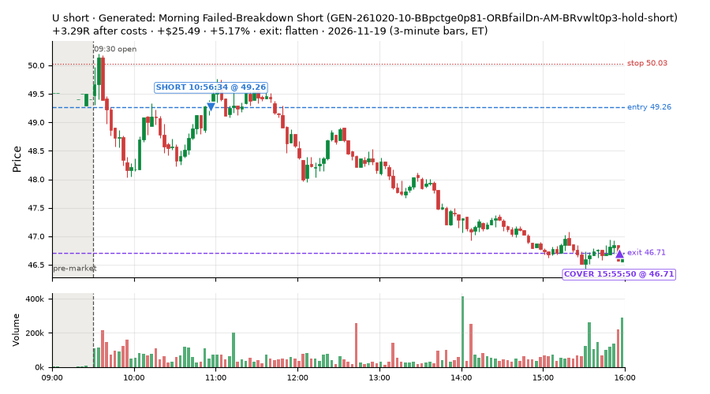
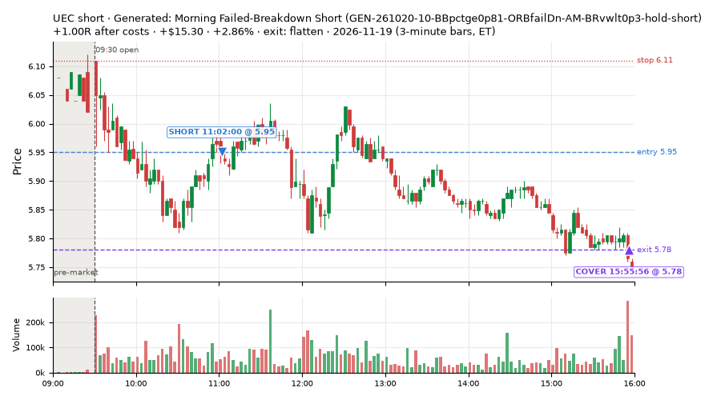
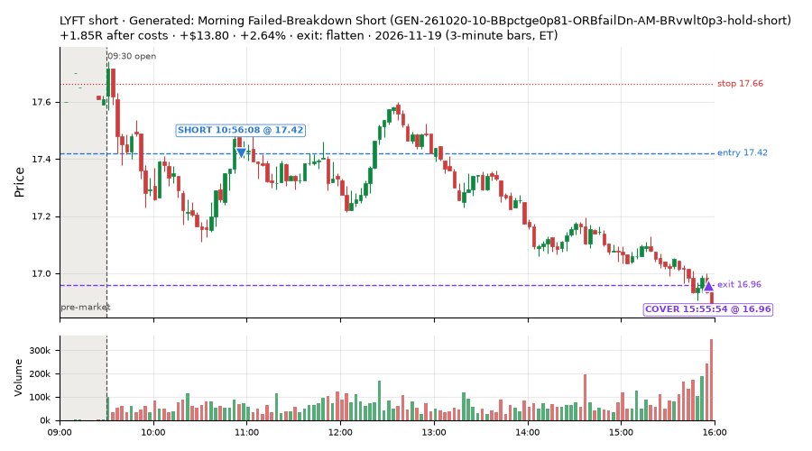
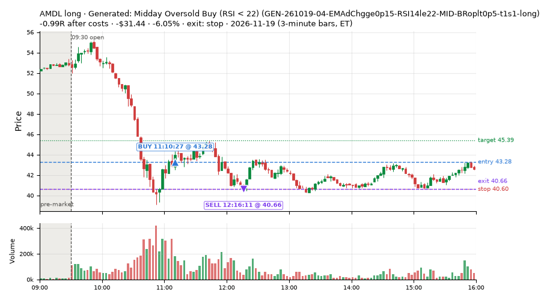
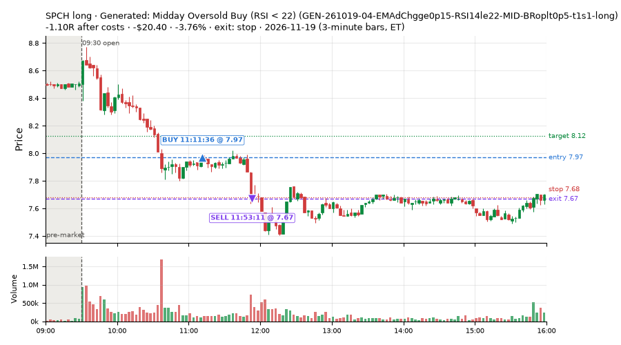
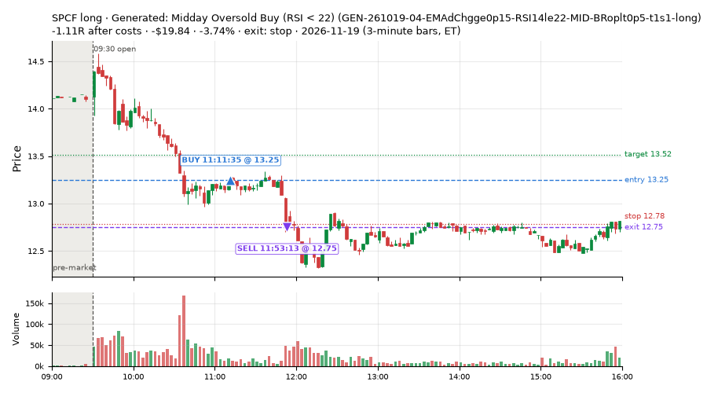
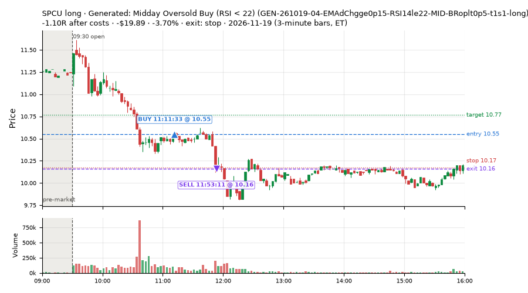
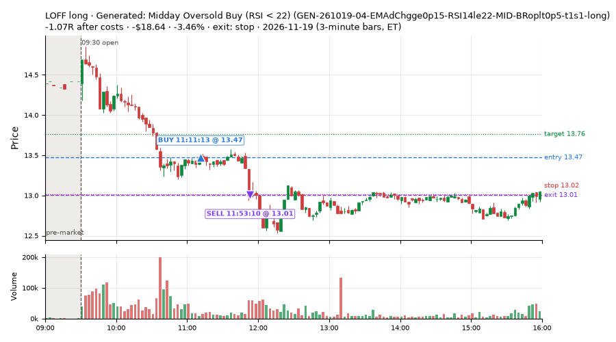

69 trades · win rate 35% · P/L $-143.14
PROBATION: no live setup has passed both locked test periods. 10 owner-directed setups added 2026-10-08 (MarcoFlow top 5 + 5 new), untested live. RW6G1 (RW6 + VWAP band guard) added 2026-10-09, probation.

| Symbol | Setup | Side | In | Out | Entry | Exit | Exit reason | % gained | P/L |
|---|---|---|---|---|---|---|---|---|---|
| U | Generated: Morning Failed-Breakdown Short (GEN-261020-10-BBpctge0p81-ORBfailDn-AM-BRvwlt0p3-hold-short) | short | 10:56 | 15:55 | 49.26 | 46.71 | flatten | +5.17% | $25.49 |
| UEC | Generated: Morning Failed-Breakdown Short (GEN-261020-10-BBpctge0p81-ORBfailDn-AM-BRvwlt0p3-hold-short) | short | 11:02 | 15:55 | 5.95 | 5.78 | flatten | +2.86% | $15.30 |
| LYFT | Generated: Morning Failed-Breakdown Short (GEN-261020-10-BBpctge0p81-ORBfailDn-AM-BRvwlt0p3-hold-short) | short | 10:56 | 15:55 | 17.42 | 16.96 | flatten | +2.64% | $13.80 |
| Symbol | Setup | Side | In | Out | Entry | Exit | Exit reason | % lost | P/L |
|---|---|---|---|---|---|---|---|---|---|
| AMDL | GEN-261019-04-EMAdChgge0p15-RSI14le22-MID-BRoplt0p5-t1s1-long | long | 11:10 | 12:16 | 43.28 | 40.66 | stop | -6.05% | $-31.44 |
| SPCH | GEN-261019-04-EMAdChgge0p15-RSI14le22-MID-BRoplt0p5-t1s1-long | long | 11:11 | 11:53 | 7.97 | 7.67 | stop | -3.76% | $-20.40 |
| SPCF | GEN-261019-04-EMAdChgge0p15-RSI14le22-MID-BRoplt0p5-t1s1-long | long | 11:11 | 11:53 | 13.25 | 12.75 | stop | -3.74% | $-19.84 |
| SPCU | GEN-261019-04-EMAdChgge0p15-RSI14le22-MID-BRoplt0p5-t1s1-long | long | 11:11 | 11:53 | 10.55 | 10.16 | stop | -3.70% | $-19.89 |
| LOFF | GEN-261019-04-EMAdChgge0p15-RSI14le22-MID-BRoplt0p5-t1s1-long | long | 11:11 | 11:53 | 13.47 | 13.01 | stop | -3.46% | $-18.64 |








Signal to fill: median 2s, 90th percentile 4s (69 trades). Bars close each minute; the order follows the bar close.
Best excursion (MFE): median 0.78R; worst (MAE) median 1.00R. 30% of trades never got +0.25R in our favour; 6 reached +1R and still closed at or below 0.
| Symbol | Setup | Best R | Worst R | Closed R |
|---|---|---|---|---|
| SLDE | GEN-261020-10-BBpctge0p81-ORBfailDn-AM-BRvwlt0p3-hold-short | +2.18 | -0.95 | -1.40 |
| AGO | GEN-261020-10-BBpctge0p81-ORBfailDn-AM-BRvwlt0p3-hold-short | +1.29 | -1.03 | -1.18 |
| COMP | GEN-261020-10-BBpctge0p81-ORBfailDn-AM-BRvwlt0p3-hold-short | +1.02 | -1.06 | -1.15 |
| CELH | GEN-261020-09-EMAdChgge0p093-Z12lem0p82-VWAPcrossesle0-MID-QQQltm0p3-holdtr-long | +1.03 | -1.04 | -1.11 |
| EDV | GEN-261020-10-BBpctge0p81-ORBfailDn-AM-BRvwlt0p3-hold-short | +0.87 | -1.12 | -1.22 |
| Entry time | Trades | Win | Avg R | P/L |
|---|---|---|---|---|
| 10:30-11:30 | 65 | 35% | -0.22 | $-129.72 |
| 11:30-13:00 | 4 | 25% | -0.57 | $-13.42 |
| Setup | Trades | Win | Avg R after costs | Adj R (net of SPY) | Avg R ex-market (all sessions) | P/L |
|---|---|---|---|---|---|---|
| Generated: Midday Oversold Buy (RSI < 22) (GEN-261019-04-EMAdChgge0p15-RSI14le22-MID-BRoplt0p5-t1s1-long) | 11.0 | 9% | -0.87 | -0.28 | +0.11 (beta +1.05, n 130) | $-136.29 |
| Generated: Midday Stretched Dip Buy (GEN-261020-09-EMAdChgge0p093-Z12lem0p82-VWAPcrossesle0-MID-QQQltm0p3-holdtr-long) | 16.0 | 12% | -0.65 | +0.45 | +0.27 (beta +0.89, n 205) | $-49.38 |
| Generated: Morning Failed-Breakdown Short (GEN-261020-10-BBpctge0p81-ORBfailDn-AM-BRvwlt0p3-hold-short) | 40.0 | 50% | +0.09 | -1.05 | -0.39 (beta -0.84, n 144) | $44.39 |
| Generated: Late-AM Pop Fade (SPY down) (GEN-261023-06-RSI7le38-Ret15mge0p54-EMAdiffge0p29-LAM-SPYltm0p25-t1s05-short) | 2.0 | 50% | +0.02 | -0.39 | +0.89 (beta -0.70, n 12) | $-1.86 |
Market direction (SPY, beta 1) accounted for $69.98 of today's $-143.14; the rest ($-213.12) came from the setups themselves. Avg R net of SPY: -0.56 (incl. a hedge leg's cost; report only).
12 setups live today. Today: 116 signals, 69 taken, 0 lost because another setup held the symbol (0%). Since 2026-10-19 (24 sessions): 9739 signals, 4121 taken, 283 lost to other setups (3%). Peak open positions today 62 of 300 slots. Earnings blackout removed 209 symbols before scanning.
Simulated playing time (not live): 5593 what-if trades of signals not taken, avg -0.11R, 44% winners; of them 283 lost to another setup (avg -0.04R).
Silent: GEN-261021-08-RSI2le0-Ret15mATRge0p16-ATRdge3p6-LUNCH-QQQgt0p6-holdtr-long, GEN-POD1022-01-thrasher-breadth-thrust-stocks-holdtr-long
| Prio | Setup | Today sig / taken | Sessions | Signals / taken / trades | Taken/day | Expected/day | Lost to other setups | Lost to (setup n) | Top skip reasons | SIMULATED: not-taken n / avg R / win | Verdict |
|---|---|---|---|---|---|---|---|---|---|---|---|
| 1 | Podcast: Breadth Thrust, Index ETFs (observation) GEN-POD1022-02-breadth-thrust-index-etf-holdtr-long | 0 / 0 | 19 | 4 / 2 / 2 | 0.11 | – | 0 | – | spread / quote / size 2 | 2 / -1.02R / 0% | slow 0.5 entries/week; ~114 weeks to 60 trades |
| 2 | Generated: Late-AM Pop Fade (SPY down) GEN-261023-06-RSI7le38-Ret15mge0p54-EMAdiffge0p29-LAM-SPYltm0p25-t1s05-short | 9 / 2 | 20 | 43 / 12 / 12 | 0.60 | – | 2 | GEN-261022-01-ORBfailUp-ATRdge7p9-Eff6ge0p55-AM-SPYdn-hold-long 2 | not shortable / shorts off 17, spread / quote / size 11, symbol held by another setup 2 | 31 / -0.82R / 10% | slow 3.0 entries/week; ~20 weeks to 60 trades |
| 3 | Generated: Morning RSI Drop Buy (strong mkt) GEN-261021-09-RSIslopelem19-ORHdistlem0p73-AM-BRvwgt0p7-t1s1-long | 0 / 0 | 22 | 22 / 11 / 11 | 0.50 | – | 2 | GEN-261023-03-RSI5le13-VWAPatrlem0p34-OPEN-BRvwgt0p6-holdtr-short 1, GEN-261026-05-Ret15mATRge0p042-FromPCATRge0p28-ORHdistlem0p38-OPEN-BRopgt0p5-hold-short 1, GEN-261029-08-Ret15mlem0p36-Flow3lem0p54-RSI14ge65-AM-SPYgt0p5-hold-short 1 | spread / quote / size 6, broker rejected 3, symbol held by another setup 2 | 11 / +0.67R / 91% | slow 2.5 entries/week; ~24 weeks to 60 trades |
| 4 | Generated: Midday Divergence Short (SPY up) GEN-261020-04-MACDhge0p12-BullDiv-MID-SPYgt0p25-t05s1-short | 0 / 0 | 23 | 79 / 7 / 7 | 0.30 | – | 1 | GEN-261028-05-EMAdChgge0p093-ORLdistlem0p42-LAM-QQQgt0p6-holdtr-long 1 | not shortable / shorts off 48, daily loss cap 20, broker rejected 2 | 72 / +0.06R / 74% | slow 1.5 entries/week; ~39 weeks to 60 trades |
| 5 | Podcast: Bull Flag Breakout or Bailout (observation) GEN-POD1022-03-wt-bull-flag-bailout-S-long | 0 / 0 | 19 | 8 / 3 / 3 | 0.16 | – | 0 | – | spread / quote / size 3, other 2 | 5 / +0.25R / 80% | slow 0.8 entries/week; ~76 weeks to 60 trades |
| 6 | Generated: Late-AM New-High Short (QQQ down) GEN-261021-04-NewHOD-PDHdistlem0p65-LAM-QQQltm0p6-hold-short | 0 / 0 | 22 | 17 / 6 / 6 | 0.27 | – | 0 | – | not shortable / shorts off 6, spread / quote / size 4, broker rejected 1 | 11 / +0.09R / 36% | slow 1.4 entries/week; ~44 weeks to 60 trades |
| 7 | Generated: PM Oversold Turn Buy (MACD rising) GEN-261020-01-MACDhge0p12-RSI5le25-PM-BRvwgt0p6-t1s05-long | 0 / 0 | 23 | 123 / 55 / 55 | 2.39 | – | 1 | GEN-261029-08-Ret15mlem0p36-Flow3lem0p54-RSI14ge65-AM-SPYgt0p5-hold-short 1 | daily loss cap 33, broker rejected 21, spread / quote / size 11 | 68 / +0.08R / 52% | slow 12.0 entries/week; ~5 weeks to 60 trades |
| 8 | Generated: Midday Oversold Buy (RSI < 22) GEN-261019-04-EMAdChgge0p15-RSI14le22-MID-BRoplt0p5-t1s1-long | 15 / 11 | 24 | 279 / 130 / 130 | 5.42 | – | 7 | GEN-261022-09-Ret15mATRlem0p16-BarRngATRge0p11-ADX7ge64-AM-BRvwlt0p3-hold-short 7 | spread / quote / size 67, daily loss cap 41, broker rejected 22 | 148 / +0.38R / 69% | ok 27.1 entries/week |
| 9 | Generated: Morning Failed-Breakdown Short GEN-261020-10-BBpctge0p81-ORBfailDn-AM-BRvwlt0p3-hold-short | 73 / 40 | 23 | 412 / 144 / 144 | 6.26 | – | 0 | – | per-setup cap 120, not shortable / shorts off 71, spread / quote / size 71 | 268 / -0.46R / 25% | ok 31.3 entries/week |
| 10 | Generated: Midday Stretched Dip Buy GEN-261020-09-EMAdChgge0p093-Z12lem0p82-VWAPcrossesle0-MID-QQQltm0p3-holdtr-long | 19 / 16 | 23 | 279 / 205 / 205 | 8.91 | – | 16 | GEN-261022-09-Ret15mATRlem0p16-BarRngATRge0p11-ADX7ge64-AM-BRvwlt0p3-hold-short 16 | spread / quote / size 55, symbol held by another setup 16, other 2 | 74 / +0.50R / 69% | ok 44.6 entries/week |
| 11 | Generated: Open Below-Prior-Low Buy (big bar) GEN-261021-02-BarRngATRge0p14-PDLdistlem0p045-OPEN-SPYgt0p5-t1s1-long | 0 / 0 | 20 | 575 / 243 / 243 | 12.15 | – | 7 | GEN-261023-03-RSI5le13-VWAPatrlem0p34-OPEN-BRvwgt0p6-holdtr-short 5, GEN-261027-07-RSI14le35-FromOpenge2-AM-BRvwlt0p5-t1s1-short 1, GEN-261029-09-RangeExpge1p6-Since950ATRlem0p43-OPEN-BRvwgt0p5-hold-short 1 | per-setup cap 161, spread / quote / size 161, symbol held by another setup 7 | 332 / +0.17R / 63% | ok 60.8 entries/week |
| 12 | Generated: Late-AM Failed-Breakout Buy GEN-261029-01-ORBfailUp-RSI14le41-ADX7le29-LAM-QQQgt0p3-hold-long | 0 / 0 | 16 | 387 / 121 / 121 | 7.56 | – | 6 | GEN-261029-08-Ret15mlem0p36-Flow3lem0p54-RSI14ge65-AM-SPYgt0p5-hold-short 3, GEN-261022-08-EMAdChglem0p094-Flow3ge1-RVolDayle0p59-AM-SPYgt0p25-holdtr-short 2, GEN-261022-07-Z12lem1p9-FlowShiftlem0p96-ATRdge3p6-AM-BRopgt0p5-t1s1-short 1 | broker rejected 137, daily loss cap 75, spread / quote / size 48 | 266 / -0.21R / 40% | ok 37.8 entries/week |
Every trade is attached as a CSV you can open and edit in Excel or Google Sheets. Live page: https://misiti15.github.io/MCF/live/